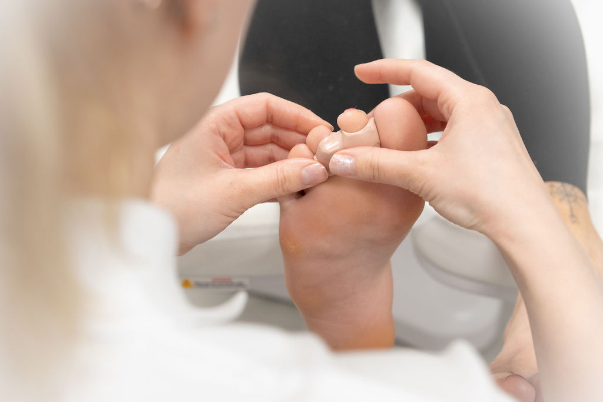

Silikoniortoosi
Yksilöllisesti valmistettu, korjaava ja suojaava tuki varpaille.
Mitä palvelu sisältää?
Silikoniortoosi valmistetaan aina yksilöllisesti vastaanotolla. Se on varpaita keventävä, korjaava ja suojaava tuki, jonka avulla ohjataan varpaiden asentoa oikeaan suuntaan. Ortoosi on pitkäikäinen, joustava ja pestävä, joten se soveltuu hyvin päivittäiseen käyttöön.
Varvasortoosit valmistetaan erilaisista silikonimassoista, joiden vahvuus ja joustavuus valitaan käyttötarkoituksen mukaan. Ortoosi muotoillaan yksilöllisesti jalan ja varpaiden rakenteiden perusteella, jotta se on mahdollisimman toimiva ja miellyttävä käyttää.
Hyödyt
Yksilöllisesti valmistettu
Ortoosi muotoillaan juuri sinun jalkojesi mukaan vastaanotolla.
Korjaava ja suojaava
Ohjaa varpaiden asentoa oikeaan suuntaan ja suojaa paineilta.
Pitkäikäinen ja pestävä
Laadukas silikoni kestää päivittäistä käyttöä ja on helppo puhdistaa.
Miellyttävä käyttää
Joustava ja pehmeä silikoni tuntuu miellyttävältä päivittäisessä käytössä.
Usein kysyttyä
Miten silikoniortoosi valmistetaan?
Ortoosi valmistetaan vastaanotolla yksilöllisesti jalan ja varpaiden rakenteiden perusteella. Silikonimassan vahvuus valitaan käyttötarkoituksen mukaan.
Kuinka kauan ortoosi kestää?
Silikoniortoosi on pitkäikäinen ja kestää hyvin päivittäistä käyttöä. Se on joustava ja helppo pitää puhtaana.
Voinko pestä ortoosin?
Kyllä, ortoosi on pestävä. Käytä mietoa saippuaa ja haaleaa vettä. Anna kuivua huoneenlämmössä.
Mihin vaivoihin silikoniortoosi auttaa?
Ortoosi auttaa varpaiden asentovirheisiin, kuten vaivasenluuhun, vasaravarpaisiin ja muihin varpaiden linjausongelmiin. Se keventää, korjaa ja suojaa.
Valmiina varaamaan ajan?
Ota yhteyttä ja varaa aika - autan sinua mielelläni!